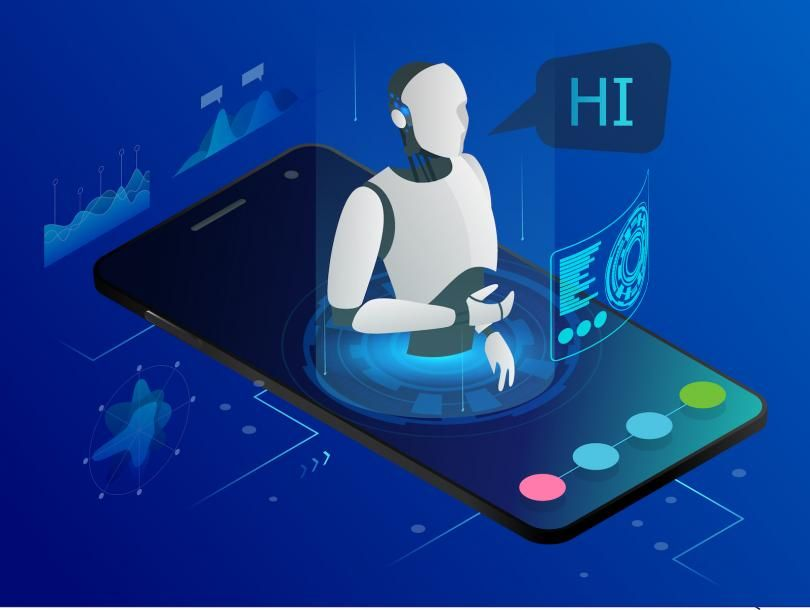

Concepts

How Does Artificial Intelligence Work?
AI Approaches and Concepts
Less than a decade after breaking the Nazi encryption machine Enigma and helping the Allied Forces win World War II, mathematician Alan Turing changed history a second time with a simple question: "Can machines think?"
Turing's paper "Computing Machinery and Intelligence" (1950), and its subsequent Turing Test, established the fundamental goal and vision of artificial intelligence.
At its core, AI is the branch of computer science that aims to answer Turing's question in the affirmative. It is the endeavor to replicate or simulate human intelligence in machines.
The expansive goal of artificial intelligence has given rise to many questions and debates. So much so, that no singular definition of the field is universally accepted.
Can machines think? – Alan Turing, 1950
The major limitation in defining AI as simply "building machines that are intelligent" is that it doesn't actually explain what artificial intelligence is? What makes a machine intelligent? AI is an interdisciplinary science with multiple approaches, but advancements in machine learning and deep learning are creating a paradigm shift in virtually every sector of the tech industry.
In their groundbreaking textbook Artificial Intelligence: A Modern Approach, authors Stuart Russell and Peter Norvig approach the question by unifying their work around the theme of intelligent agents in machines. With this in mind, AI is "the study of agents that receive percepts from the environment and perform actions." (Russel and Norvig viii)
Norvig and Russell go on to explore four different approaches that have historically defined the field of AI:
- Thinking humanly
- Thinking rationally
- Acting humanly
- Acting rationally
The first two ideas concern thought processes and reasoning, while the others deal with behavior. Norvig and Russell focus particularly on rational agents that act to achieve the best outcome, noting "all the skills needed for the Turing Test also allow an agent to act rationally." (Russel and Norvig 4).
Patrick Winston, the Ford professor of artificial intelligence and computer science at MIT, defines AI as "algorithms enabled by constraints, exposed by representations that support models targeted at loops that tie thinking, perception and action together."
While these definitions may seem abstract to the average person, they help focus the field as an area of computer science and provide a blueprint for infusing machines and programs with machine learning and other subsets of artificial intelligence.
The Four Types of Artificial Intelligence
Reactive Machines
A reactive machine follows the most basic of AI principles and, as its name implies, is capable of only using its intelligence to perceive and react to the world in front of it. A reactive machine cannot store a memory and as a result cannot rely on past experiences to inform decision making in real-time.
Perceiving the world directly means that reactive machines are designed to complete only a limited number of specialized duties. Intentionally narrowing a reactive machine’s worldview is not any sort of cost-cutting measure, however, and instead means that this type of AI will be more trustworthy and reliable — it will react the same way to the same stimuli every time.
A famous example of a reactive machine is Deep Blue, which was designed by IBM in the 1990’s as a chess-playing supercomputer and defeated international grandmaster Gary Kasparov in a game. Deep Blue was only capable of identifying the pieces on a chess board and knowing how each moves based on the rules of chess, acknowledging each piece’s present position, and determining what the most logical move would be at that moment. The computer was not pursuing future potential moves by its opponent or trying to put its own pieces in better position. Every turn was viewed as its own reality, separate from any other movement that was made beforehand.
Another example of a game-playing reactive machine is Google’s AlphaGo. AlphaGo is also incapable of evaluating future moves but relies on its own neural network to evaluate developments of the present game, giving it an edge over Deep Blue in a more complex game. AlphaGo also bested world-class competitors of the game, defeating champion Go player Lee Sedol in 2016.
Though limited in scope and not easily altered, reactive machine artificial intelligence can attain a level of complexity, and offers reliability when created to fulfill repeatable tasks.
Limited Memory
Limited memory artificial intelligence has the ability to store previous data and predictions when gathering information and weighing potential decisions — essentially looking into the past for clues on what may come next. Limited memory artificial intelligence is more complex and presents greater possibilities than reactive machines.
Limited memory AI is created when a team continuously trains a model in how to analyze and utilize new data or an AI environment is built so models can be automatically trained and renewed. When utilizing limited memory AI in machine learning, six steps must be followed: Training data must be created, the machine learning model must be created, the model must be able to make predictions, the model must be able to receive human or environmental feedback, that feedback must be stored as data, and these these steps must be reiterated as a cycle.
There are three major machine learning models that utilize limited memory artificial intelligence:
- Reinforcement learning, which learns to make better predictions through repeated trial-and-error.
- Long Short Term Memory (LSTM), which utilizes past data to help predict the next item in a sequence. LTSMs view more recent information as most important when making predictions and discounts data from further in the past, though still utilizing it to form conclusions
- Evolutionary Generative Adversarial Networks (E-GAN), which evolves over time, growing to explore slightly modified paths based off of previous experiences with every new decision. This model is constantly in pursuit of a better path and utilizes simulations and statistics, or chance, to predict outcomes throughout its evolutionary mutation cycle.
Theory of Mind
Theory of Mind is just that — theoretical. We have not yet achieved the technological and scientific capabilities necessary to reach this next level of artificial intelligence.
The concept is based on the psychological premise of understanding that other living things have thoughts and emotions that affect the behavior of one’s self. In terms of AI machines, this would mean that AI could comprehend how humans, animals and other machines feel and make decisions through self-reflection and determination, and then will utilize that information to make decisions of their own. Essentially, machines would have to be able to grasp and process the concept of “mind,” the fluctuations of emotions in decision making and a litany of other psychological concepts in real time, creating a two-way relationship between people and artificial intelligence.
Self-awareness
Once Theory of Mind can be established in artificial intelligence, sometime well into the future, the final step will be for AI to become self-aware. This kind of artificial intelligence possesses human-level consciousness and understands its own existence in the world, as well as the presence and emotional state of others. It would be able to understand what others may need based on not just what they communicate to them but how they communicate it.
Self-awareness in artificial intelligence relies both on human researchers understanding the premise of consciousness and then learning how to replicate that so it can be built into machines.
USES, EXAMPLES + APPLICATIONS
How is AI Used?
While addressing a crowd at the Japan AI Experience in 2017, DataRobot CEO Jeremy Achin began his speech by offering the following definition of how AI is used today:
"AI is a computer system able to perform tasks that ordinarily require human intelligence... Many of these artificial intelligence systems are powered by machine learning, some of them are powered by deep learning and some of them are powered by very boring things like rules."
Artificial intelligence generally falls under two broad categories:
- Narrow AI: Sometimes referred to as "Weak AI," this kind of artificial intelligence
operates within a limited context and is a simulation of human intelligence. Narrow AI is often
focused on performing a single task extremely well and while these machines may seem intelligent,
they are operating under far more constraints and limitations than even the most basic human
intelligence.
- Artificial General Intelligence (AGI): AGI, sometimes referred to as "Strong AI," is the kind of artificial intelligence we see in the movies, like the robots from Westworld or Data from Star Trek: The Next Generation. AGI is a machine with general intelligence and, much like a human being, it can apply that intelligence to solve any problem.
Narrow Artificial Intelligence
Narrow AI is all around us and is easily the most successful realization of artificial intelligence to date. With its focus on performing specific tasks, Narrow AI has experienced numerous breakthroughs in the last decade that have had "significant societal benefits and have contributed to the economic vitality of the nation," according to "Preparing for the Future of Artificial Intelligence," a 2016 report released by the Obama Administration.
A few examples of Narrow AI include:
- Google search
- Image recognition software
- Siri, Alexa and other personal assistants
- Self-driving cars
- IBM's Watson
Machine Learning & Deep Learning
Much of Narrow AI is powered by breakthroughs in machine learning and deep learning. Understanding the difference between artificial intelligence, machine learning and deep learning can be confusing. Venture capitalist Frank Chen provides a good overview of how to distinguish between them, noting:
"Artificial intelligence is a set of algorithms and intelligence to try to mimic human intelligence. Machine learning is one of them, and deep learning is one of those machine learning techniques."
Simply put, machine learning feeds a computer data and uses statistical techniques to help it "learn" how to get progressively better at a task, without having been specifically programmed for that task, eliminating the need for millions of lines of written code. Machine learning consists of both supervised learning (using labeled data sets) and unsupervised learning (using unlabeled data sets).
Deep learning is a type of machine learning that runs inputs through a biologically-inspired neural network architecture. The neural networks contain a number of hidden layers through which the data is processed, allowing the machine to go "deep" in its learning, making connections and weighting input for the best results.
Artificial General Intelligence
The creation of a machine with human-level intelligence that can be applied to any task is the Holy Grail for many AI researchers, but the quest for AGI has been fraught with difficulty.
The search for a "universal algorithm for learning and acting in any environment," (Russel and Norvig 27) isn't new, but time hasn't eased the difficulty of essentially creating a machine with a full set of cognitive abilities.
AGI has long been the muse of dystopian science fiction, in which super-intelligent robots overrun humanity, but experts agree it's not something we need to worry about anytime soon.
History

A Brief History of Artificial Intelligence
Intelligent robots and artificial beings first appeared in the ancient Greek myths of Antiquity. Aristotle's development of syllogism and its use of deductive reasoning was a key moment in mankind's quest to understand its own intelligence. While the roots are long and deep, the history of artificial intelligence as we think of it today spans less than a century. The following is a quick look at some of the most important events in AI.
1940s
- (1943) Warren McCullough and Walter Pitts publish "A Logical Calculus of Ideas Immanent in Nervous Activity." The paper proposed the first mathematical model for building a neural network.
- (1949) In his book The Organization of Behavior: A Neuropsychological Theory, Donald Hebb proposes the theory that neural pathways are created from experiences and that connections between neurons become stronger the more frequently they're used. Hebbian learning continues to be an important model in AI.
1950s
- (1950) Alan Turing publishes "Computing Machinery and Intelligence, proposing what is now known as the Turing Test, a method for determining if a machine is intelligent.
- (1950) Harvard undergraduates Marvin Minsky and Dean Edmonds build SNARC, the first neural network computer.
- (1950) Claude Shannon publishes the paper "Programming a Computer for Playing Chess."
- (1950) Isaac Asimov publishes the "Three Laws of Robotics."
- (1952) Arthur Samuel develops a self-learning program to play checkers.
- (1954) The Georgetown-IBM machine translation experiment automatically translates 60 carefully selected Russian sentences into English.
- (1956) The phrase artificial intelligence is coined at the "Dartmouth Summer Research Project on Artificial Intelligence." Led by John McCarthy, the conference, which defined the scope and goals of AI, is widely considered to be the birth of artificial intelligence as we know it today.
- (1956) Allen Newell and Herbert Simon demonstrate Logic Theorist (LT), the first reasoning program.
- (1958) John McCarthy develops the AI programming language Lisp and publishes the paper "Programs with Common Sense." The paper proposed the hypothetical Advice Taker, a complete AI system with the ability to learn from experience as effectively as humans do.
- (1959) Allen Newell, Herbert Simon and J.C. Shaw develop the General Problem Solver (GPS), a program designed to imitate human problem-solving.
- (1959) Herbert Gelernter develops the Geometry Theorem Prover program.
- (1959) Arthur Samuel coins the term machine learning while at IBM.
- (1959) John McCarthy and Marvin Minsky founded the MIT Artificial Intelligence Project.
1960s
- (1963) John McCarthy starts the AI Lab at Stanford.
- (1966) The Automatic Language Processing Advisory Committee (ALPAC) report by the U.S. government details the lack of progress in machine translations research, a major Cold War initiative with the promise of automatic and instantaneous translation of Russian. The ALPAC report leads to the cancellation of all government-funded MT projects.
- (1969) The first successful expert systems are developed in DENDRAL, a XX program, and MYCIN, designed to diagnose blood infections, are created at Stanford.
1970s
- (1972) The logic programming language PROLOG is created.
- (1973) The "Lighthill Report," detailing the disappointments in AI research, is released by the British government and leads to severe cuts in funding for artificial intelligence projects.
- (1974-1980) Frustration with the progress of AI development leads to major DARPA cutbacks in academic grants. Combined with the earlier ALPAC report and the previous year's "Lighthill Report," artificial intelligence funding dries up and research stalls. This period is known as the "First AI Winter."
1980s
- (1980) Digital Equipment Corporations develops R1 (also known as XCON), the first successful commercial expert system. Designed to configure orders for new computer systems, R1 kicks off an investment boom in expert systems that will last for much of the decade, effectively ending the first "AI Winter."
- (1982) Japan's Ministry of International Trade and Industry launches the ambitious Fifth Generation Computer Systems project. The goal of FGCS is to develop supercomputer-like performance and a platform for AI development.
- (1983) In response to Japan's FGCS, the U.S. government launches the Strategic Computing Initiative to provide DARPA funded research in advanced computing and artificial intelligence.
- (1985) Companies are spending more than a billion dollars a year on expert systems and an entire industry known as the Lisp machine market springs up to support them. Companies like Symbolics and Lisp Machines Inc. build specialized computers to run on the AI programming language Lisp.
- (1987-1993) As computing technology improved, cheaper alternatives emerged and the Lisp machine market collapsed in 1987, ushering in the "Second AI Winter." During this period, expert systems proved too expensive to maintain and update, eventually falling out of favor.
1990s
- (1991) U.S. forces deploy DART, an automated logistics planning and scheduling tool, during the Gulf War.
- (1992) Japan terminates the FGCS project in 1992, citing failure in meeting the ambitious goals outlined a decade earlier.
- (1993) DARPA ends the Strategic Computing Initiative in 1993 after spending nearly $1 billion and falling far short of expectations.
- (1997) IBM's Deep Blue beats world chess champion Gary Kasparov
2000s
- (2005) STANLEY, a self-driving car, wins the DARPA Grand Challenge.
- (2005) The U.S. military begins investing in autonomous robots like Boston Dynamics' "Big Dog" and iRobot's "PackBot."
- (2008) Google makes breakthroughs in speech recognition and introduces the feature in its iPhone app.
2010-2014
- (2011) IBM's Watson trounces the competition on Jeopardy!.
- (2011) Apple releases Siri, an AI-powered virtual assistant through its iOS operating system.
- (2012) Andrew Ng, founder of the Google Brain Deep Learning project, feeds a neural network using deep learning algorithms 10 million YouTube videos as a training set. The neural network learned to recognize a cat without being told what a cat is, ushering in the breakthrough era for neural networks and deep learning funding.
- (2014) Google makes the first self-driving car to pass a state driving test.
- (2014) Amazon's Alexa, a virtual home is released
2015-2021
- (2016) Google DeepMind's AlphaGo defeats world champion Go player Lee Sedol. The complexity of the ancient Chinese game was seen as a major hurdle to clear in AI.
- (2016) The first "robot citizen", a humanoid robot named Sophia, is created by Hanson Robotics and is capable of facial recognition, verbal communication and facial expression.
- (2018) Google releases natural language processing engine BERT, reducing barriers in translation and understanding by machine learning applications.
- (2018) Waymo launches its Waymo One service, allowing users throughout the Phoenix metropolitan area to request a pick-up from one of the company's self-driving vehicles.
- (2020) Baidu releases its LinearFold AI algorithm to scientific and medical teams working to develop a vaccine during the early stages of the SARS-CoV-2 pandemic. The algorithm is able to predict the RNA sequence of the virus in just 27 seconds, 120 times faster than other methods.